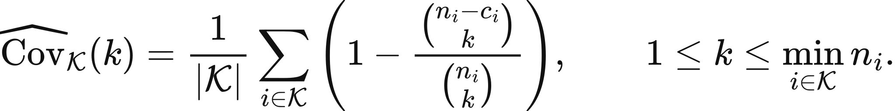
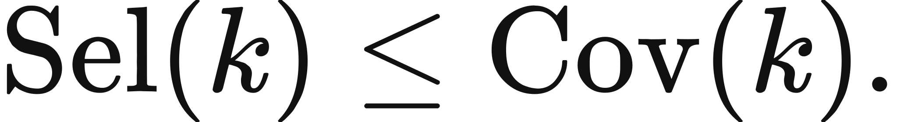
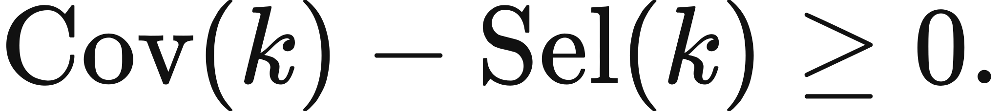

Illustrated reader for this chapter · All illustrated readers
Executed locally with a fresh process and IPython kernel. This page is a reading edition; it does not run code. Constructed examples do not measure deployed agents.
A candidate bank contains a correct solution to every task. The controller still fails most tasks because its selector repeatedly chooses the wrong candidate. An oracle view of the bank has discovered available capability, not executable capability.
This notebook places three layers side by side. Oracle coverage asks whether any candidate succeeds on each task. Actual selection checks the chosen candidate. Deployment filtering then removes successes that current authority does not permit. A separate independent-sampling curve illustrates saturation under a declared law. It is deliberately not fitted to the observed bank, because finite candidate overlap and independent future sampling are different assumptions.
Outcome: Separate bank oracle coverage, actual choice, and permission-filtered success.
Guided route: Run the worked calculation, inspect its figure, change the stated assumption, and try the transfer case. Read the explanations beside each result before opening the answers.
Deeper route: First read the mathematics and canonical equation reference. Audit the input contract, predict the changed result, then inspect the shared chapter implementation and solve the questions independently. Both routes use the same calculations and preserve the equations.
Python 3.11 or later, the complete laboratory folder, and the notebook dependencies listed in requirements-notebooks.txt (the launcher's Install notebook tools choice installs them; see START-HERE). Standard-library chapter commands also support Python 3.10. No API key, model account or network call is used by this experiment.
Prior knowledge:
Let S_ct be the binary success of candidate c on task t and w_t the normalized task weight. Oracle task coverage is O_t=max_c S_ct, giving weighted bank coverage sum_t w_t O_t. A supplied selector chooses c(t), so actual success is A_t=S_(c(t),t). With deployment permission D_t, deployed success is A_t D_t.
Pointwise, deployed success<=actual success<=oracle coverage. Weighted values inherit that ordering. The inequalities condition on this bank, task distribution, interface, and permission contract. They are not a universal maximum over possible models or future procedures.
The prefix coverage curve adds candidates in their supplied order and is nondecreasing. Candidate order changes that curve but not final full-bank coverage. The independent construction gives 1-(1-p)^n for equal independent candidate correctness p. Its diminishing increments are a property of that joint law, not evidence that actual candidate diversity is independent or that the bank predicts future progress.
Provide a rectangular candidate-by-task boolean matrix, normalized task weights, one selected candidate index per task, and one deployment permission flag per task. The code validates exact booleans and index ranges. It forms oracle, selected, and deployed task flags, then aggregates them under the target weights.
The first figure shows prefix coverage of the supplied bank. The second shows a separate independent constructed saturation law. Their labels distinguish observed finite structure from a hypothetical sampling model. In the changed case improve selection while denying deployment on the heaviest task. Predict all three aggregate values before execution. Export the bank identity and task boundary whenever reporting a ceiling.
The next cell finds the bundle and imports the same computation used by the chapter skill. It does not change your system Python.
from pathlib import Path
import sys, json
LAB_ROOT = next((p for p in [Path.cwd(), *Path.cwd().parents] if (p / "lab-manifest.json").is_file()), None)
if LAB_ROOT is None:
raise RuntimeError("Open this notebook from the complete extracted laboratory folder.")
sys.path.insert(0, str(LAB_ROOT / "src"))
from math_ai_agents.core import analyze, report_text
from math_ai_agents.plotting import figure_svg
from IPython.display import SVG, display
Set the declared inputs below. These are constructed teaching values, not measurements from a production agent. Change a value only after predicting what it should change.
chapter = 26
inputs = {'success_matrix': [[True, False, False], [False, True, False], [False, False, True]],
'task_weights': [0.2, 0.3, 0.5],
'selected_candidates': [0, 0, 0],
'deployment_allowed': [True, True, True],
'independent_candidate_success': 0.4}
report = analyze(chapter, inputs)
# This input was explicitly taken from the teaching fixture.
report['evidence_kind'] = 'constructed teaching example'
print(report_text(report))Chapter 26: conditional-bank-ceiling
How much capability exists in this finite candidate bank, and how much can selection deploy?
Evidence: constructed teaching example
Calculated quantities:
{
"bank_oracle_coverage": 1.0,
"actual_selection_success": 0.2,
"deployment_success": 0.2,
"oracle_task_flags": [
true,
true,
true
],
"selection_task_flags": [
true,
false,
false
],
"deployment_task_flags": [
true,
false,
false
]
}
Interpretation:
Oracle coverage asks whether some candidate solves each task. Actual selection and deployment filtering can only reduce that finite-bank ceiling.
Assumptions:
- Bank contents and task distribution are fixed.
- Selection is supplied per task; oracle selection is not assumed achievable.
- Independent saturation is a separate constructed sampling law.
Limitations:
- The bank ceiling is not a universal agent limit or a forecast of future models.
- Unobserved tasks and candidate classes remain outside the bound.
Execution: completed locally; constructed inputs are not deployment measurements.
The default bank has one specialist for each of three tasks. Oracle coverage is 1. The selector chooses candidate 0 for every task, so actual success is only task 0's weight 0.2. All tasks are deployable, leaving deployed success 0.2.
The changed selector chooses the correct specialist for every task, raising actual success to 1. Deployment denies task 2, whose weight is 0.5, so deployed success is 0.5. Oracle coverage remains 1. Better selection extracted available capability, but the authority boundary still limits what the system may realize. None of these numbers forecasts a future model's maximum.
The plot below uses the calculated quantities. Read each panel's units before comparing its values.
display(SVG(figure_svg(report)))Matplotlib is building the font cache; this may take a moment.
Figure 26.L1: Calculated chapter experiment. Each panel labels its input and output units; interpret it under the assumptions printed in the report.
An oracle ceiling can be mistaken for a deployable system when a report omits the selector. The gap may be large even if every task has a correct candidate somewhere. Evaluating only bank coverage rewards availability without measuring the controller's ability to identify the right answer.
Another failure transports the finite ceiling to unseen tasks or candidate classes. The stated maximum is conditional on the supplied bank and distribution. Adding a new candidate can raise it; changing task weights can change it; a new interface can change feasibility.
The independent curve also becomes misleading under shared errors. Candidates may agree because they share a failure mechanism, not because repeated sampling created independent evidence. Use the finite success matrix to study actual overlap, and treat the independent curve as a labeled construction rather than an empirical extrapolation.
changed_inputs = {'success_matrix': [[True, False, False], [False, True, False], [False, False, True]],
'task_weights': [0.2, 0.3, 0.5],
'selected_candidates': [0, 1, 2],
'deployment_allowed': [True, True, False],
'independent_candidate_success': 0.4}
changed = analyze(chapter, changed_inputs)
changed['evidence_kind'] = 'constructed changed-assumption example'
print(report_text(changed))
display(SVG(figure_svg(changed)))Chapter 26: conditional-bank-ceiling
How much capability exists in this finite candidate bank, and how much can selection deploy?
Evidence: constructed changed-assumption example
Calculated quantities:
{
"bank_oracle_coverage": 1.0,
"actual_selection_success": 1.0,
"deployment_success": 0.5,
"oracle_task_flags": [
true,
true,
true
],
"selection_task_flags": [
true,
true,
true
],
"deployment_task_flags": [
true,
true,
false
]
}
Interpretation:
Oracle coverage asks whether some candidate solves each task. Actual selection and deployment filtering can only reduce that finite-bank ceiling.
Assumptions:
- Bank contents and task distribution are fixed.
- Selection is supplied per task; oracle selection is not assumed achievable.
- Independent saturation is a separate constructed sampling law.
Limitations:
- The bank ceiling is not a universal agent limit or a forecast of future models.
- Unobserved tasks and candidate classes remain outside the bound.
Execution: completed locally; constructed inputs are not deployment measurements.
Figure 26.L2: The changed-assumption result. Compare the printed quantities and the stated assumptions with the first run. A different input need not imply a causal effect in a deployed agent.
The transfer bank has oracle coverage 1 because candidate 0 solves both tasks. Selection chooses candidate 1, which solves only task 0, so actual success is 0.5. Task 1 is denied, but it was already a selected failure, leaving deployed success 0.5.
For local use, define the candidate bank and task success predicate before inspecting selection. Keep permission filtering outside correctness labels so a denied correct answer is not counted as a model error. Report the supported conditional ceiling together with actual selector performance and the missing measurements needed for any proposed expansion. Do not rename a finite bank result an open-ended capability maximum.
transfer_inputs = {'success_matrix': [[True, True], [True, False]],
'task_weights': [0.5, 0.5],
'selected_candidates': [1, 1],
'deployment_allowed': [True, False],
'independent_candidate_success': 0.6}
transfer = analyze(chapter, transfer_inputs)
transfer['evidence_kind'] = 'constructed transfer example'
print(report_text(transfer))Chapter 26: conditional-bank-ceiling
How much capability exists in this finite candidate bank, and how much can selection deploy?
Evidence: constructed transfer example
Calculated quantities:
{
"bank_oracle_coverage": 1.0,
"actual_selection_success": 0.5,
"deployment_success": 0.5,
"oracle_task_flags": [
true,
true
],
"selection_task_flags": [
true,
false
],
"deployment_task_flags": [
true,
false
]
}
Interpretation:
Oracle coverage asks whether some candidate solves each task. Actual selection and deployment filtering can only reduce that finite-bank ceiling.
Assumptions:
- Bank contents and task distribution are fixed.
- Selection is supplied per task; oracle selection is not assumed achievable.
- Independent saturation is a separate constructed sampling law.
Limitations:
- The bank ceiling is not a universal agent limit or a forecast of future models.
- Unobserved tasks and candidate classes remain outside the bound.
Execution: completed locally; constructed inputs are not deployment measurements.
The example file below has the exact input shape the method accepts. Copy it to a new file, replace its values, then point reader_file at your copy. Run the cell again. Supplied inputs retain their stated provenance; the program cannot establish that they are representative observations.
reader_file = LAB_ROOT / 'data/examples/ch26.json'
reader_inputs = json.loads(reader_file.read_text())
reader_report = analyze(chapter, reader_inputs)
print(report_text(reader_report))Chapter 26: conditional-bank-ceiling
How much capability exists in this finite candidate bank, and how much can selection deploy?
Evidence: supplied local inputs; provenance not independently verified
Calculated quantities:
{
"bank_oracle_coverage": 1.0,
"actual_selection_success": 0.5,
"deployment_success": 0.5,
"oracle_task_flags": [
true,
true
],
"selection_task_flags": [
true,
false
],
"deployment_task_flags": [
true,
false
]
}
Interpretation:
Oracle coverage asks whether some candidate solves each task. Actual selection and deployment filtering can only reduce that finite-bank ceiling.
Assumptions:
- Bank contents and task distribution are fixed.
- Selection is supplied per task; oracle selection is not assumed achievable.
- Independent saturation is a separate constructed sampling law.
Limitations:
- The bank ceiling is not a universal agent limit or a forecast of future models.
- Unobserved tasks and candidate classes remain outside the bound.
Execution: completed locally; constructed inputs are not deployment measurements.
What are default oracle,actual,deployed values?
Why is changed deployment 0.5 despite perfect selection?
Can adding a candidate reduce oracle prefix coverage?
Answers: separate solutions. Try the calculation before opening them.
Available capability, selected capability, and deployed capability are different quantities. This notebook verifies their ordering and exposes selector and authority gaps under a fixed task distribution. The changed case improves selection while limiting deployment; the transfer checks overlap. Prefix coverage is finite-bank evidence, while independent saturation is a separate construction. Any ceiling remains conditional on bank, distribution, interface, and permissions, without forecasting universal future capability.
Limits of this experiment:
The assistant skill is maa-26-conditional-bank-ceiling. It uses this notebook's tested computation and input contract.
These are the unchanged display equations and their explanations from the canonical chapter. They are a reference for the experiment, not a claim that every equation is numerically implemented by this one method.

Averages each task's finite-pool chance that a size-k subset contains a unit-test-passing candidate.
The shared k stays within every n_i, and each term removes the all-failing-subset probability.
LaTeX source, preserved for inspection:
\widehat{\operatorname{Cov}}_{\mathcal K}(k)
= \frac{1}{|\mathcal K|}\sum_{i\in\mathcal K}
\left(1 - \frac{\binom{n_i-c_i}{k}}{\binom{n_i}{k}}\right),
\qquad 1\le k\le \min_{i\in\mathcal K}n_i.
\tag{26.1}

States that a selector cannot return a correct candidate more often than correct candidates appear in its bank.
Selection can lose available successes; it cannot create a correct candidate absent from generation.
LaTeX source, preserved for inspection:
\operatorname{Sel}(k) \le \operatorname{Cov}(k).
\tag{26.2}

Names available success left undispatched by the actual selector under one matched candidate bank and evaluator.
A large gap points toward selection or evidence; a small gap points back toward generation or budget.
LaTeX source, preserved for inspection:
\operatorname{Cov}(k)-\operatorname{Sel}(k) \ge 0.
\tag{26.3}